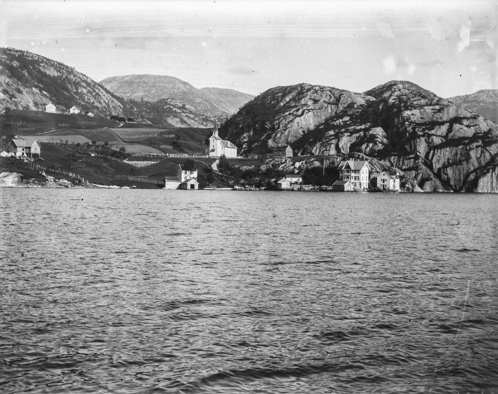
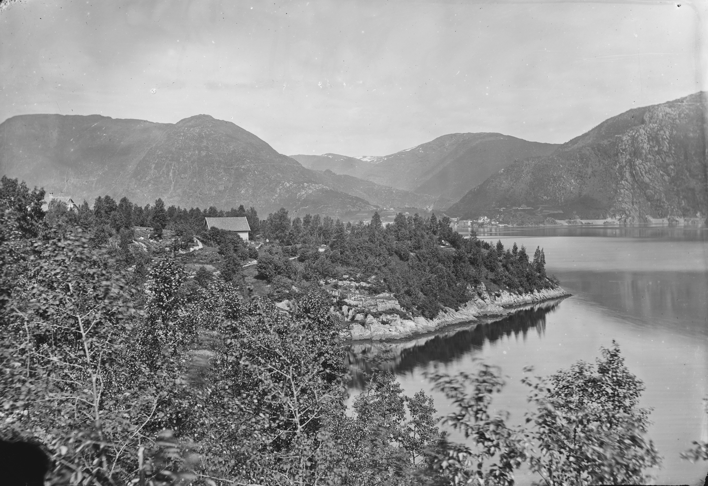
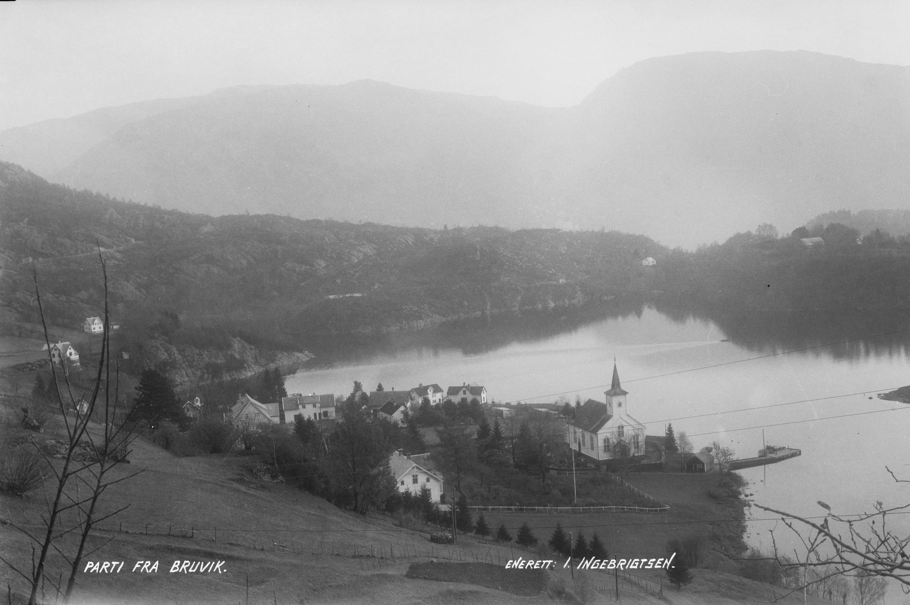

Bruvik: Sosiokulturell evolusjon, industriell pragmatisme og øyidentitet
Bruvik er eit samansett sosiokulturelt fenomen på kartet over Vestlandet, der fenomenal demografisk levedyktigheit, hardt fysisk arbeid og strenge sosiale praksisar har floka seg saman gjennom hundreåra. Det opphavlege norrøne toponymet «Brúnvíkr» («vika ved fjellbrynet») har ein strengt funksjonell karakter, og kodar det geologiske dominerande trekket i landskapet: Dei massive steinmassane på Osterøy stuper bratt ned i det djupe vatnet i fjorden. Denne opphavlege dikotomien mellom hard stein og flytande vatn la føringane for den lokale befolkninga sin overlevingslogikk.
Demografisk tilpassing og utspringet til lokalsamfunnet
Dei første dokumenterte prova på den institusjonelle organiseringa av busetnaden daterer seg til 1320, då utsendingar frå Bruvik var til stades på eit kyrkjemøte i Bergen. Busetnaden synte ei usedvanleg demografisk motstandskraft i møte med kritiske omveltingar. Trass i at Svartedauden i 1349 utsletta ein enorm del av befolkninga i Skandinavia, tok lokalsamfunnet i Bruvik seg raskt opp att, noko den kontinuerlege rekkja av skatte- og kyrkjeregister frå 1360 og 1374 vitnar om.
Denne evna til regenerering forma ein særskild type innbyggjarar – pragmatiske, uthaldande og klare for sjølvorganisering i ein tilstand av isolasjon frå dei større sentera på fastlandet.
Фото: Atelier KK / Universitetsbiblioteket i Bergen. Источник
Kvardagssosiologi: Strenge overgangsrituar
Den geografiske avstanden frå sivilisasjonen kom tydelegast til uttrykk i innbyggjarane sitt forhold til døden og gravferdspraksisar. Før den utbygde dampskipstrafikken kom, vart dødsfallet til ein i samfunnet ei utmattande logistisk prøve.
Transport: Mennene la ut på ei farleg ferd i robåtar eller små seglbåtar over fjordane til Bergen, utelukkande for å skaffe dei tradisjonelle svarte kistene.
Sosiale avskjedar: Ventetida på levering kunne ta fleire dagar. Avskjeden med den avdøde fann stad direkte i heimane: Slektningar og naboar samla seg i same rom som den døde, der det ofte vart servert mat og kaffi med ein gong.
Sjølvorganisering: På grunn av at busetnaden var så vanskeleg tilgjengeleg, vitja ordinerte prestar Bruvik sjeldan. Den praktiske gjennomføringa av rituala fall på lekfolket – til å leie seremonien valde ein den mest respekterte innbyggjaren i bygda (forsongaren), som las salmar og leidde songen.
Det offisielle ritualet for jordfesting med prest kunne finne stad først fleire månadar seinare. Samstundes fungerte den lokale kyrkja alltid som den andelege og sosiale kjernen i busetnaden. Praksisen med å kjøpe eksklusive gravstader direkte under tregolvet i den gamle kyrkja var vanleg blant velståande bønder. Sjølve den arkitektoniske og institusjonelle lagnaden til Bruvik kyrkje – frå bygginga av ei stavkyrkje i tre på 1300-talet til kongens audmjukande tvangssal av bygningen på auksjon i 1724 for å dekkje krigsgjeld – er så monumental og samansett at ho krev ei eiga, sjølvstendig gransking.

Фото: John Bernhard Rekstad / Universitetsbiblioteket i Bergen. Источник
Økonomisk transformasjon: Industrielt hegemoni
Den historiske vegen til Bruvik knuser radikalt stereotypien om dei norske fjordane som ein utelukkande jordbruks- og fiskeidyll. Frå andre halvdel av 1800-talet vart bygda omdanna til eit kraftig industrielt og administrativt knutepunkt.
I 1870 vart den sjølvstendige Bruvik kommune offisielt oppretta. På toppen av si stordomstid kontrollerte denne administrative eininga enorme område på begge sider av fjorden med eit folketal på 5673. Det er verdt å merke seg at den demografiske fordelinga var asymmetrisk: På sjølve øyområdet Osterøy budde det berre 409 faste innbyggjarar, men det var nettopp her den logistiske og administrative infrastrukturen var konsentrert.
Grunnlaget for industrialiseringa:
Det økonomiske fundamentet for denne oppblomstringa var Skaftådalen (Skaftå).
Frå 1870 tok ein til med storskala industriell utvinning av kalksteinsførekomstar her.
Arbeidet for steinhoggarar og gruvearbeidarar i opne brot og ved kalkomnane var fysisk utmattande og særs farleg.
Den utvunne steinen vart frakta på lekterar, og spelte ei kritisk rolle i byggeboomen i det veksande Bergen, samt for å nøytralisere surleiken i jordbruksjorda på Vestlandet.
Den industrielle identiteten til området var så dominerande at det offisielle kommunevåpenet vart eit massivt tannhjul – eit kompromisslaust manifest for trua på maskinisering, framsteg og krafta i hardt kroppsarbeid. Den industrielle stordomstida tok først slutt på 1960-talet: Kalksteinsproduksjonen vart lagd ned i 1961, og sjølve kommunen vart oppløyst og delt mellom nabokommunane i 1968.

Фото: Knud Knudsen / Universitetsbiblioteket i Bergen. Источник
Penitentiær psykogeografi: Ulfsnesøy
Som ein kontrast til dei industrielle sigrane står eit mørkt psykogeografisk objekt – øya Ulfsnesøy, som ligg rett overfor kaia i Bruvik. Observasjonen av denne øya danna ein spesifikk psykologisk bakgrunn for fleire generasjonar av lokale innbyggjarar.
Frå 1881 nytta den norske staten dette isolerte området som ein streng oppdragar- og skuleheim for «vanskelege» gutar frå heile landet. Tenåringane vart rivne bort frå familiane sine og plasserte under dei strenge kåra i øydisiplinen, der det iskalde vatnet i fjorden gjorde all flukt nærast umogleg. Systemet var basert på hardt jordbruksarbeid. Trass i at ein katastrofal brann i 1901 øydela nesten alle bygningane, vart anlegget raskt bygd opp att innan 1904.
Institusjonen var i drift i eit heilt hundreår. Seinare, frå 1981 til 2019, vart infrastrukturen på øya nytta til å gjennomføre eit radikalt skandinavisk eksperiment – her dreiv ein eit eksperimentelt ope fengsel med ei økologisk innretting. Dei innsette dreiv med økologisk landbruk og dyrestell, noko som skapte ein paradoksal kontrast til den mørke historiske fortida til staden.

Фото: Atelier KK / Universitetsbiblioteket i Bergen. Источник
Naturleg dominant: Integrering i det moderne landskapet
Heile det historiske dramaet til lokalsamfunnet utspelte seg ved foten av fjellet Bruviknipa, som rager 822 meter over havet. I dag fungerer dette massivet som eit nøkkelelement i transformasjonen av Bruvik frå eit tidlegare industrisenter til ein destinasjon for intellektuell og ekstrem turisme.
Den klassiske turiststien startar direkte frå ruinane av dei gamle industrielle parkeringsplassane og kalksteinsbrota i Skaftådalen. Slik sett representerer den moderne oppstiginga ei fysisk rørsle gjennom historiske lag: frå sona med hardt menneskeleg arbeid i låglandet til den panoramiske toppen. Om vinteren vert fjellet transformert til ei utfordrande rute for ekstrem skiturisme.
Dagens Bruvik er ei samansett forteljing, der estetikken i den ville naturen er uatskiljeleg frå historia om menneskeleg overvinning: frå klangen av hakker i steinbrota og strenge øyrituar til den djupe isolasjonen i straffeinstitusjonane på fjordvatnet.
Фото: Oscar Hansen / Universitetsbiblioteket i Bergen. Источник
Брувік: Соціокультурна еволюція, індустріальний прагматизм та острівна ідентичність
Брувік — складний соціокультурний феномен на мапі Західної Норвегії, де протягом століть перепліталися феноменальна демографічна життєстійкість, важка фізична праця та суворі соціальні практики. Оригінальний давньоскандинавський топонім «Brúnvíkr» («затока біля гірського хребта») має суто функціональний характер, кодуючи геологічну домінанту ландшафту: масивні скельні породи острова Остерей різко обриваються в глибокі води затоки. Ця первісна дихотомія твердого каменю та плинної води зумовила логіку виживання місцевого населення.
Демографічна адаптивність та генезис громади
Перші документальні свідчення про інституційне оформлення поселення належать до 1320 року, коли делегати від Брувіка були присутні на церковному соборі в Бергені. Поселення продемонструвало виняткову демографічну стійкість в умовах критичних потрясінь. Незважаючи на пандемію Чорної смерті 1349 року, яка знищила колосальну частину населення Скандинавії, громада Брувіка швидко відновилася, про що свідчить безперервність податкових і церковних реєстрів 1360 та 1374 років.
Ця здатність до регенерації сформувала особливий тип місцевого жителя — прагматичного, витривалого та готового до самоорганізації в умовах ізоляції від великих материкових центрів.
Фото: Atelier KK / Universitetsbiblioteket i Bergen. Источник
Соціологія побуту: Суворі ритуали переходу
Географічна відірваність від цивілізації найяскравіше виявлялася у ставленні жителів до смерті та похоронних практик. До появи розвиненого пароплавного сполучення смерть члена громади перетворювалася на виснажливе логістичне випробування.
Транспортування: Чоловіки вирушали в небезпечне плавання на веслових човнах або невеликих вітрильниках фіордами до Бергена виключно заради придбання традиційних чорних трун.
Соціальні проводи: Очікування доставки могло тривати кілька днів. Проводи покійного відбувалися безпосередньо в будинках: родичі та сусіди збиралися в одній кімнаті з небіжчиком, де часто одразу ж подавали їжу та каву.
Самоорганізація: Через важкодоступність поселення висвячені пастори відвідували Брувік рідко. Практична реалізація ритуалов лягала на плечі мирян — для проведення церемонії обирали найповажнішого жителя села (forsanger), який читав псалми та керував співами.
Офіційний обряд освячення землі (jordfestelse) за участю пастора міг відбутися лише через кілька місяців. При цьому духовним і соціальним ядром поселення незмінно виступала місцева церква. Практика купівлі елітних місць для поховання безпосередньо під дерев'яною підлогою старого храму була звичною справою для заможних селян. Сама архітектурна та інституційна доля церкви Брувіка — від спорудження дерев'яної ставкірки в XIV столітті до принизливого продажу будівлі з аукціону королем у 1724 році заради покриття військових боргів — є настільки монументальною та складною, що потребує окремого, незалежного дослідження.
Фото: John Bernhard Rekstad / Universitetsbiblioteket i Bergen. Источник
Економічна трансформація: Індустріальна гегемонія
Історичний шлях Брувіка радикально руйнує стереотип про норвезькі фіорди як про виключно аграрно-рибальську ідилію. З другої половини XIX століття село трансформувалося в потужний індустріальний та адміністративний хаб.
У 1870 році був офіційно сформований незалежний муніципалітет Брувік. На піку своєї експансії ця адміністративна одиниця контролювала колосальні території по обидва боки фіорду з населенням 5673 особи. Примітно, що демографічний розподіл був асиметричним: на самій острівній території Остерея проживало лише 409 постійних жителів, проте саме тут концентрувалася логістична та управлінська інфраструктура.
Базис індустріалізації:
Економічним фундаментом цього розквіту стала долина Скафто (Skaftå).
З 1870 року тут почалася масштабна промислова розробка покладів вапняку.
Праця каменотесів і гірників у відкритих кар'єрах та на випалювальних печах була фізично виснажливою і вкрай небезпечною.
Видобута порода транспортувалася на баржах, відіграючи критичну роль у будівельному бумі Бергена, що зростав, та нейтралізації кислотності сільськогосподарських ґрунтів Західної Норвегії.
Індустріальна ідентичність території була настільки домінуючою, що офіційним гербом муніципалітету стала масивна шестірня — безкомпромісний маніфест віри в машинізацію, прогрес і силу важкої робітничої праці. Епоха промислової величі завершилася лише в 1960-х роках: виробництво вапняку було згорнуто 1961 року, а сам муніципалітет розформовано і поділено між сусідніми комунами 1968 року.
Фото: Knud Knudsen / Universitetsbiblioteket i Bergen. Источник
Пенітенціарна психогеографія: Острів Ульфснесей
На тлі індустріальних перемог виділяється похмурий психогеографічний об'єкт — острів Ульфснесей (Ulfsnesøy), розташований прямо навпроти сільської пристані Брувіка. Спостереження за цим островом формувало специфічний психологічний фон для кількох поколінь місцевих жителів.
З 1881 року норвезька держава використовувала цю ізольовану територію як сувору виправну колонію-інтернат для «важковиховуваних» хлопчиків з усієї країни. Підлітків відривали від родин і поміщали в суворі умови острівної дисципліни, де крижані води фіорду робили будь-яку втечу практично неможливою. Система базувалася на важкій сільськогосподарській праці. Незважаючи на те, що в 1901 році катастрофічна пожежа знищила практично всі будівлі, комплекс був оперативно відбудований заново до 1904 року.
Установа проіснувала ціле століття. Згодом, з 1981 по 2019 рік, інфраструктура острова використовувалася для проведення радикального скандинавського експерименту — тут функціонувала експериментальна в'язниця відкритого типу з екологічним ухилом. Ув'язнені займалися органічним землеробством та доглядом за тваринами, що створювало парадоксальний контраст із похмурим історичним минулим локації.
Фото: Atelier KK / Universitetsbiblioteket i Bergen. Источник
Природна домінанта: Інтеграція в сучасний ландшафт
Уся історична драма громади розгорталася біля підніжжя гори Брувікніпа (Bruviknipa), що височіє на 822 метри над рівнем моря. Сьогодні цей масив слугує ключовим елементом трансформації Брувіка з колишнього промислового центру на дестинацію для інтелектуального та екстремального туризму.
Класична туристична стежка стартує безпосередньо від руїн старих індустріальних парковок і вапнякових кар'єрів у долині Скафто. Таким чином, сучасне сходження являє собою фізичне переміщення крізь історичні шари: від зони важкої людської праці в низині до панорамної вершини. Взимку гора трансформується у складний маршрут для екстремального скі-туру.
Сьогоднішній Брувік — це складний наратив, де естетика дикої природи невіддільна від історії людського подолання: від дзенькоту кирок у кар'єрах і суворих острівних ритуалів до глухої ізоляції пенітенціарних установ на водах фіорду.
Фото: Oscar Hansen / Universitetsbiblioteket i Bergen. Источник
Bruvik: Sociocultural Evolution, Industrial Pragmatism, and Island Identity
Bruvik is a complex sociocultural phenomenon on the map of Western Norway, where phenomenal demographic resilience, hard physical labor, and austere social practices have intertwined over centuries. The original Old Norse toponym "Brúnvíkr" ("the bay at the edge of the mountain") is strictly functional, encoding the geological dominant of the landscape: the massive rock formations of Osterøy island drop abruptly into the deep waters of the fjord. This primordial dichotomy of solid stone and flowing water predetermined the survival logic of the local population.
Demographic Adaptability and Community Genesis
The earliest documentary evidence of the settlement's institutional formation dates back to 1320, when delegates from Bruvik attended a church synod in Bergen. The settlement demonstrated exceptional demographic resilience in the face of critical upheavals. Although the Black Death pandemic of 1349 decimated a colossal portion of Scandinavia's population, the Bruvik community quickly recovered, as evidenced by the continuity of tax and church registers from 1360 and 1374.
This capacity for regeneration forged a specific type of local inhabitant—pragmatic, enduring, and capable of self-organization while isolated from major mainland centers.
Фото: Atelier KK / Universitetsbiblioteket i Bergen. Источник
Sociology of Everyday Life: Austere Rites of Passage
Geographical isolation from civilization was most vividly manifested in the residents' attitudes toward death and burial practices. Prior to the advent of developed steamship communication, the death of a community member turned into an exhausting logistical ordeal.
Transportation: Men embarked on perilous voyages in rowboats or small sailboats across the fjords to Bergen solely to procure traditional black coffins.
Social Farewells: Awaiting delivery could take several days. The farewell to the deceased took place directly in the homes: relatives and neighbors gathered in the same room as the deceased, where food and coffee were often served immediately.
Self-Organization: Due to the settlement's inaccessibility, ordained pastors rarely visited Bruvik. The practical execution of rituals fell on the shoulders of the laity—the most respected village resident (forsanger) was chosen to lead the ceremony, reading psalms and directing the hymns.
The official consecration of the grave (jordfestelse) involving a pastor might only occur months later. Meanwhile, the local church consistently served as the spiritual and social core of the settlement. The practice of purchasing elite burial plots directly beneath the wooden floorboards of the old church was common among wealthy farmers. The architectural and institutional fate of Bruvik Church itself—from the construction of a wooden stave church in the 14th century to the humiliating public auction of the building by the king in 1724 to cover war debts—is so monumental and complex that it demands a separate, independent study.
Фото: John Bernhard Rekstad / Universitetsbiblioteket i Bergen. Источник
Economic Transformation: Industrial Hegemony
Bruvik's historical trajectory radically dismantles the stereotype of the Norwegian fjords as an exclusively agrarian and fishing idyll. From the second half of the 19th century, the village transformed into a powerful industrial and administrative hub.
In 1870, the independent municipality of Bruvik was officially established. At the peak of its expansion, this administrative unit controlled vast territories on both sides of the fjord, with a population of 5,673. Notably, the demographic distribution was asymmetrical: only 409 permanent residents lived on the island territory of Osterøy itself, yet this was precisely where the logistical and administrative infrastructure was concentrated.
The Basis of Industrialization:
The economic foundation for this prosperity was the Skaftå valley.
From 1870, large-scale industrial extraction of limestone deposits began here.
The labor of stonemasons and miners in the open-pit quarries and calcining kilns was physically exhausting and extremely dangerous.
The extracted rock was transported on barges, playing a critical role in the construction boom of a growing Bergen and in neutralizing the acidity of agricultural soils in Western Norway.
The territory's industrial identity was so dominant that a massive gearwheel became the municipality's official coat of arms—an uncompromising manifesto of faith in mechanization, progress, and the power of heavy manual labor. The era of industrial grandeur only concluded in the 1960s: limestone production was phased out in 1961, and the municipality itself was dissolved and partitioned among neighboring communes in 1968.
Фото: Knud Knudsen / Universitetsbiblioteket i Bergen. Источник
Penitentiary Psychogeography: Ulfsnesøy Island
Against the backdrop of industrial triumphs stands a grim psychogeographical object—the island of Ulfsnesøy, located directly opposite Bruvik's village pier. The observation of this island formed a specific psychological backdrop for several generations of local residents.
From 1881, the Norwegian state utilized this isolated territory as a strict reformatory boarding school for "difficult" boys from across the country. Teenagers were torn from their families and placed in the harsh conditions of island discipline, where the icy waters of the fjord made any escape practically impossible. The system was based on grueling agricultural labor. Although a catastrophic fire destroyed nearly all the buildings in 1901, the complex was promptly rebuilt by 1904.
The institution existed for a full century. Subsequently, from 1981 to 2019, the island's infrastructure was used to conduct a radical Scandinavian experiment—an experimental open prison with an ecological focus. Inmates engaged in organic farming and animal husbandry, creating a paradoxical contrast with the location's grim historical past.
Фото: Atelier KK / Universitetsbiblioteket i Bergen. Источник
Natural Dominant: Integration into the Modern Landscape
The entire historical drama of the community unfolded at the foot of Mount Bruviknipa, towering 822 meters above sea level. Today, this massif serves as a key element in Bruvik's transformation from a former industrial center into a destination for intellectual and extreme tourism.
The classic hiking trail starts directly from the ruins of old industrial parking lots and limestone quarries in the Skaftå valley. Thus, the modern ascent represents a physical journey through historical layers: from the zone of heavy human labor in the lowlands to the panoramic summit. In winter, the mountain transforms into a challenging route for extreme ski touring.
Today's Bruvik is a complex narrative where the aesthetics of wild nature are inseparable from the history of human overcoming: from the clinking of pickaxes in the quarries and harsh island rituals to the profound isolation of penitentiary institutions on the waters of the fjord.
Фото: Oscar Hansen / Universitetsbiblioteket i Bergen. Источник
Брувик: Социокультурная эволюция, индустриальный прагматизм и островная идентичность
Брувик — сложный социокультурный феномен на карте Западной Норвегии, где на протяжении столетий переплетались феноменальная демографическая жизнестойкость, тяжелый физический труд и суровые социальные практики. Оригинальный староскандинавский топоним «Brúnvíkr» («залив у горного хребта») носит строго функциональный характер, кодируя геологическую доминанту ландшафта: массивные скальные породы острова Остерёй резко обрываются в глубокие воды залива. Эта изначальная дихотомия твердого камня и текучей воды предопределила логику выживания местного населения.
Демографическая адаптивность и генезис общины
Первые документальные свидетельства об институциональной оформленности поселения относятся к 1320 году, когда делегаты от Брувика присутствовали на церковном соборе в Бергене. Поселение продемонстрировало исключительную демографическую устойчивость в условиях критических потрясений. Несмотря на пандемию Черной смерти 1349 года, уничтожившую колоссальную часть населения Скандинавии, община Брувика быстро восстановилась, о чем свидетельствует непрерывность налоговых и церковных реестров 1360 и 1374 годов.
Эта способность к регенерации сформировала особый тип местного жителя — прагматичного, выносливого и готового к самоорганизации в условиях изоляции от крупных материковых центров.
Фото: Atelier KK / Universitetsbiblioteket i Bergen. Источник
Социология быта: Суровые ритуалы перехода
Географическая оторванность от цивилизации ярче всего проявлялась в отношении жителей к смерти и погребальным практикам. До появления развитого пароходного сообщения смерть члена общины превращалась в изнурительное логистическое испытание.
Транспортировка: Мужчины отправлялись в опасное плавание на весельных лодках или небольших парусниках по фьордам в Берген исключительно ради приобретения традиционных черных гробов.
Социальные проводы: Ожидание доставки могло длиться несколько дней. Проводы усопшего проходили непосредственно в домах: родственники и соседи собирались в одной комнате с покойным, где зачастую сразу же подавались еда и кофе.
Самоорганизация: Из-за труднодоступности поселения рукоположенные пасторы посещали Брувик редко. Практическая реализация ритуалов ложилась на плечи мирян — для проведения церемонии выбирался наиболее уважаемый житель деревни (forsanger), который читал псалмы и руководил песнопениями.
Официальный обряд освящения земли (jordfestelse) с участием пастора мог состояться лишь спустя месяцы. При этом духовным и социальным ядром поселения неизменно выступала местная церковь. Практика покупки элитных мест для захоронения непосредственно под деревянными полами старого храма была обычным делом для зажиточных крестьян. Сама архитектурная и институциональная судьба церкви Брувика — от постройки деревянной ставкирки в XIV веке до унизительной продажи здания с аукциона королем в 1724 году ради покрытия военных долгов — является настолько монументальной и сложной, что требует отдельного, независимого исследования.
Фото: John Bernhard Rekstad / Universitetsbiblioteket i Bergen. Источник
Исторический путь Брувика радикально разрушает стереотип о норвежских фьордах как об исключительно аграрно-рыболовецкой идиллии. Со второй половины XIX века деревня трансформировалась в мощный индустриальный и административный хаб.
В 1870 году был официально сформирован независимый муниципалитет Брувик. На пике своей экспансии эта административная единица контролировала колоссальные территории по обе стороны фьорда с населением в 5673 человека. Примечательно, что демографическое распределение было асимметричным: на самой островной территории Остерёя проживало лишь 409 постоянных жителей, однако именно здесь концентрировалась логистическая и управленческая инфраструктура.
Базис индустриализации:
Экономическим фундаментом этого расцвета стала долина Скафто (Skaftå).
С 1870 года здесь началась масштабная промышленная разработка залежей известняка.
Труд каменотесов и горняков в открытых карьерах и на обжиговых печах был физически изнурительным и крайне опасным.
Добытая порода транспортировалась на баржах, играя критическую роль в строительном буме растущего Бергена и нейтрализации кислотности сельскохозяйственных почв Западной Норвегии.
Индустриальная идентичность территории была настолько доминирующей, что официальным гербом муниципалитета стала массивная шестерня — бескомпромиссный манифест веры в машинизацию, прогресс и силу тяжелого рабочего труда. Эпоха промышленного величия завершилась лишь в 1960-х годах: производство известняка было свернуто в 1961 году, а сам муниципалитет расформирован и поделен между соседними коммунами в 1968 году.
Фото: Knud Knudsen / Universitetsbiblioteket i Bergen. Источник
Пенитенциарная психогеография: Остров Ульфснесёй
На фоне индустриальных побед выделяется мрачный психогеографический объект — остров Ульфснесёй (Ulfsnesøy), расположенный прямо напротив деревенской пристани Брувика. Наблюдение за этим островом формировало специфический психологический фон для нескольких поколений местных жителей.
С 1881 года норвежское государство использовало эту изолированную территорию как строгую исправительную колонию-интернат для «трудновоспитуемых» мальчиков со всей страны. Подростков отрывали от семей и помещали в суровые условия островной дисциплины, где ледяные воды фьорда делали любой побег практически невозможным. Система базировалась на тяжелом сельскохозяйственном труде. Несмотря на то, что в 1901 году катастрофический пожар уничтожил практически все постройки, комплекс был оперативно отстроен заново к 1904 году.
Учреждение просуществовало целый век. Впоследствии, с 1981 по 2019 год, инфраструктура острова использовалась для проведения радикального скандинавского эксперимента — здесь функционировала экспериментальная тюрьма открытого типа с экологическим уклоном. Заключенные занимались органическим земледелием и уходом за животными, что создавало парадоксальный контраст с мрачным историческим прошлым локации.
Фото: Atelier KK / Universitetsbiblioteket i Bergen. Источник
Природная доминанта: Интеграция в современный ландшафт
Вся историческая драма общины разворачивалась у подножия горы Брувикнипа (Bruviknipa), возвышающейся на 822 метра над уровнем моря. Сегодня этот массив служит ключевым элементом трансформации Брувика из бывшего промышленного центра в дестинацию для интеллектуального и экстремального туризма.
Классическая туристическая тропа стартует непосредственно от руин старых индустриальных парковок и известняковых карьеров в долине Скафто. Таким образом, современное восхождение представляет собой физическое перемещение сквозь исторические слои: от зоны тяжелого человеческого труда в низине до панорамной вершины. Зимой гора трансформируется в сложный маршрут для экстремального ски-тура.
Сегодняшний Брувик — это сложный нарратив, где эстетика дикой природы неотделима от истории человеческого преодоления: от звона кирок в карьерах и суровых островных ритуалов до глухой изоляции пенитенциарных учреждений на водах фьорда.
Фото: Oscar Hansen / Universitetsbiblioteket i Bergen. Источник